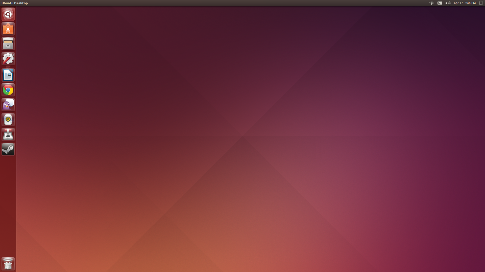
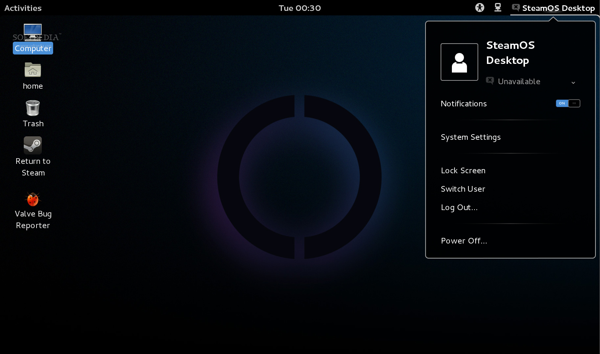
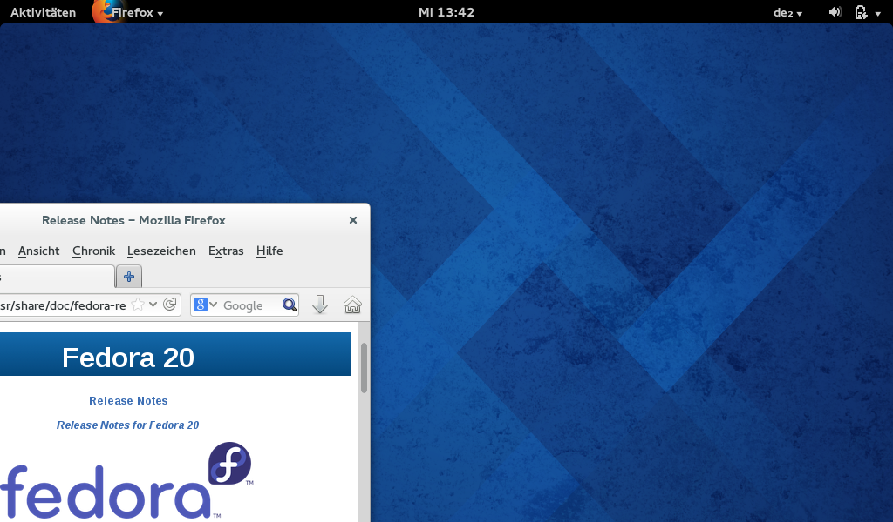

-

Ubuntu
Ubuntu (prononciation [u.bun.tu], « ou-boun-tou » en français) est un système d’exploitation open source (à ne pas confondre avec le terme "logiciel libre") commandité par la société Canonical et une marque déposée par cette même société.
Fondé sur la distribution Linux Debian, ce système d'exploitation est constitué de logiciels open source et privateurs, et est disponible gratuitement, y compris pour les entreprises, selon un principe lié à la philosophie affichée du projet. On estime en 2011 qu'il y a plus de 25 millions d'utilisateurs des différentes versions pour ordinateurs.
En 2013, Mark Shuttleworth présente Ubuntu Touch et explique dans une vidéo qu'Ubuntu vise à être disponible pour tout un écosystème incluant les télévisions, les smartphones, et les tablettes7. Le gestionnaire de bureau Unity, comme son nom l'indique, vise à unifier l’expérience utilisateur sur chacun des supports.
Identité visuelle
Depuis sa création, l'identité visuelle de la distribution s'est basée sur un thème baptisé « Human » (humain), utilisant principalement des teintes brunes et orangées ; ainsi on retrouvait, à chaque sortie de version, un écran de démarrage, un fond d'écran, un écran de connexion, ainsi que le logo de la distribution basés sur ces caractéristiques.
À partir de la version 10.04 (Lucid Lynx), une nouvelle étape dans l'identité visuelle d'Ubuntu est franchie. Le thème principal s'appelle désormais « Light » (lumière), et bénéficie d'une teinte revue basée essentiellement sur un couple violet-orange. Le logo a également été refondu, avec une nouvelle police de caractère, tout en conservant la couleur orange qui a longtemps caractérisé ce système d'exploitation. La version orange est la version 'grand public', alors que la version aubergine concerne les documents et applications orientés 'entreprise'.
Lors de la sortie, les pochettes de CD de Warty (Ubuntu 4.10) représentaient 2 femmes et un homme formant par leur bras, un cercle. La même image était présente lors de l'écran de connexion10. Elle renvoie directement au logo originale de la firme d'Ubuntu11: les 3 points et les 3 tiers du cercle étaient tous de couleurs différentes (oranges, jaunes, rouges)12. C'était une manière graphique de représenter le terme ubuntu (Je suis ce que je suis grâce à ce que nous sommes tous). Le logo de la firme d'Ubuntu est d'ailleurs nommé Circle of Friends.
À chaque nouvelle version, une nouvelle variante sortait, mais représentant toujours un groupe d'au moins 3 personnes, souvent d'ethnies différentes, disposées en cercle, avec parfois un enfant parmi eux. Cela a perduré jusqu'à Ubuntu 9.0417,18 où une nouvelle identité visuelle a été mise en place.
Diversification des supports
Si Ubuntu a été créé sous forme de distribution pour les ordinateurs de bureaux (ou portable) et les serveurs, il est maintenant question d'un écosystème Ubuntu, car plusieurs utilisations distinctes ont été créées depuis :
- Un système d'exploitation pour téléviseur connecté
- Un firmware pour smartphone créant une fonction unité centrale sous Ubuntu utilisable avec écran et clavier, c'est Ubuntu pour Android.
- Un système d'exploitation pour système tactile, smartphone et tablette, c'est Ubuntu Touch.
-

Steam OS
SteamOS est un système d'exploitation basé sur le noyau Linux et la distribution Debian (stable) et développé par la société Valve Corporation à l'origine de la plateforme de jeu vidéo Steam. Il a été annoncé pour la première fois à la conférence LinuxCon 20131.
À la LinuxCon 2013 à Édimbourg, Linus Torvalds a déclaré2 « J’aime les annonces SteamOS » et « Je pense que c’est une chance qui pourrait vraiment aider Linux sur les ordinateurs de bureau. »
Dans le cadre de ce projet, Valve a rejoint le 4 décembre 2013 la Linux Foundation
Caractéristiques
SteamOS est conçu principalement pour jouer à des jeux-vidéo. Les utilisateurs auront la possibilité de streamer des jeux depuis leur ordinateur fonctionnant sous Mac ou Windows vers ceux tournant sur SteamOS, ils partageront, en plus, les mêmes règles de partage et de filtrage familiaux que le logiciel Steam. Valve déclare avoir atteint « une hausse significative des performances attendues dans le rendu graphique » grâce à SteamOS. Le système d'exploitation est open source, permettant à tout le monde de modifier ou d'adapter le code source.
Puisque le but principal de SteamOS est de faire tourner des jeux-vidéo, il ne possède pas beaucoup de fonctionnalités, mis à part la navigation sur internet et l'exécution de jeux ; il n'y a pas de logiciel de gestion de fichiers ou d'affichage d'images installé par défaut. Les utilisateurs peuvent, quand même, avoir accès à l'environnement de bureau GNOME et installer des logiciels. Bien que la version bêta de SteamOS ne supporte pas encore de service de streaming, Valve est en négociation avec des compagnies comme Spotify ou Netflix pour adapter leur service sur SteamOS. Le système supporte les principaux processeurs graphiques pour PC venant d'Intel, Nvidia ou encore AMD.
Valve a aussi annoncé qu'ils intégreront des fonctionnalités comme la lecture de film, de musique, ou l’intégration de la télévision avant la sortie officielle du SteamOS.
Les spécifications provisoires du SteamOS Processeur Intel ou AMD supportant le 64 bits. Mémoire vive 4 Go ou plus Carte graphique AMD, Nvidia ou Intel. Espace disque Minimum 250 Go -

Fedora
Fedora, anciennement Fedora Core, est une distribution GNU/Linux bâtie sur le système RPM, développée par le Projet Fedora et soutenue par la société Red Hat. Cette distribution se veut être un système d'exploitation complet et généraliste, composé uniquement de logiciels libres. Fedora dérive donc de la distribution Red Hat Linux, et est destinée à la remplacer pour les utilisateurs finaux (utilisation non commerciale). Le maintien de Fedora est en grande partie redevable à sa communauté d'utilisateurs. Bien que Red Hat emploie de nombreux développeurs pour Fedora, l'entreprise ne fournit pas d'assistance officielle pour les utilisateurs du grand public. Le rythme de sortie des nouvelles versions suit celui de GNOME, c'est-à-dire 6 mois.
Presentation
Le Projet Fedora a débuté à la fin de 2003, lorsque Red Hat Linux a abandonné la commercialisation de ses produits pour le public. Red Hat a ainsi dirigé les utilisateurs faisant un usage professionnel de Red Hat Linux vers Red Hat Enterprise Linux (RHEL), tandis que les utilisateurs en faisant un usage domestique ont été redirigés vers Fedora. Depuis, RHEL est la seule distribution Linux pour laquelle Red Hat fournit une assistance officielle.
Les différentes versions de RHEL étant inspirées de celles de Fedora, plusieurs critiques ont été émises dénonçant que les utilisateurs de Fedora se trouvaient en fait être des essayeurs de RHEL (voir Correspondances RHL/RHEL).
Avec la première sortie de Fedora, Red Hat a lancé une tendance qui a ensuite été suivie par plusieurs vendeurs de distributions Linux : celle de créer une distribution communautaire dont une distribution commerciale pourrait s'inspirer, cette distribution servant de processus de développement ouvert menant finalement à la distribution commerciale.
{kind=link}
{kind=link}
{kind=link}